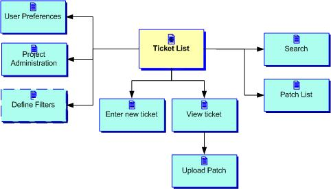
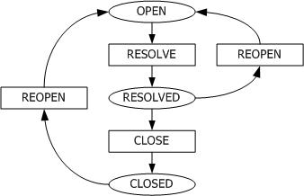

Bug-tracker Specification
By Lars Pind.
Overview
The bug-tracker will be a software tool for tracking bugs and feature
requests for software projects. It will be based on the existing SDM
(don't throw a good thing out), but it will also incorporate great
ideas from BugZilla, Bughost.com, and FogBUGZ.
Development will focus on getting a working version up and running
within about a week and a half, and then have a product that we can
incrementally improve on as we have the time and need.
Scenarios
Scenario 1: Tom finds a bug
Tom is using the software and it's not behaving like he thought it
would. He visits the bug-tracker and is greeted with a list of known
bugs in his version of the software (he's previously told the
bug-tracker what version he's using, and this version is being shown
clearly on each page, along with what version is the latest released
version, and which is the current development version). (Had he had
any bugs assigned to him, he would've been greeted with the list of
bugs assigned to him instead.) He drills down the list of known bugs
by clicking on the name of the component that's causing him
trouble. Nope, still not there. He clicks the "new bug" link and
enters the info on the new bug: What he did, what he expected to
happen, what happened instead. His version and the component has
already been filled in. He can upload a file right here, and he can
also upload more files later. There's a checkbox letting Tom choose
whether to get email alerts on all activity on this bug.
Scenario 2: Jack maintains a package
Jack gets an email alert saying there's a new bug. He checks out the
bug description in the email and decides that this is worth looking
at. He visits the page, sets the priority to High, assigns it to one
of his trusted slaves, and goes back to the beach.
Later, he visits bug-tracker, and is greeted with a list of bugs he's
assigned to. Phew. Then he checks the activity report for the past
week for the bugs he's the maintainer of, whether assigned to them or
not, to see if bugs are getting closed or if they're piling up. He
decides it's time to go squash some bugs. He goes back to the "my
bugs" list, which is already sorted by priority, then user rating
(user rating is going to be in a later version), then date of entry
(descending). Clicks the first, fixes, then hits "Next", fixes, then
hits "Next", fixes ...
Other Scenarios
- Janis is looking at a CVS log entry, which contains a reference to
ticket #819. She visits the bug-tracker for the project and enters the
number in the "look up by #" input field to view the bug.
Differences from SDM
- Different terminology: The bug-tracker will say "project" for the
top-level, releasable chunk of code, what is now called a "package" in
the SDM. The unit below that is today called a "module" in the SDM,
but will be called a "component" in the bug-tracker. Why? Project
definitely makes more sense than "package", especially given that
package is also used about APM packages. Maybe there's no good reason
to change module to component, but component is what BugZilla uses,
and it sounds more appropriate to me. Feedback is in order.
- One SDM instance per project: The front page of the bug-tracker
will show the list of open bugs for this project, not just a list of
projects to choose from.
- More status codes: A bug can be resolved in many ways: Not a bug,
not reproducible, by design, etc.
- More types of relationships between bugs: Duplicates, depends
on/blocks, side-effect of fix to other bug (not in initial version)
- Filters: Filters a' la FogBUGZ that lets you define and save your
own views (deferred to a later version).
- Estimates: Original estimate, latest estimate, time spent so
far. (not in initial version)
- Severity, type of ticket, and other status codes are fully
configurable, and you can even add your own types of codes.
Deferred features
- One system-wide "my tasks" list: We'll build a separate "task
list" application at some later point, and see how the two should be
naturally integrated.
- Ratings: They're not really used today. When we do reintroduce
them, we're going to make sure they have impact over how bugs are
prioritized.
- Custom-defined filters: We'll try to get the "engine" in place,
but we won't bother with implementing the UI for defining new ones
just now. Soon, though.
- Patches: This is a must-have, but not for the initial
release.
- We're not going to use workflow. We want the UI to be just right,
so we won't let workflow get in the way. We do want to use this
bug-tracker as a prime driver for getting ACS workflow finsihed, the
way it was originally intended to.
- We're not going to let you define your own status, resolution, or
other codes, because integrating custom codes with the UI is hard, and
we emphasize usability over flexibility in this release.
- We're not going to include triage (before-resolution) or QA
(after-resolution) steps in the workflow.
Non goals
- It's not going to be a general-purpose ticket-tracker. We'll write
a separate instrument for that later, but hopefully we can reuse key
ideas, and factor out some common underpinnings.
Page Flowchart
This is the pages there are and how they're related:

Workflow (A Bug's Life)
We have separate STATUS and RESOLUTION codes. Possible STATUS codes are:
Here's what the workflow looks like in ACS Workflow Petri Net style:

We will not, in this version, bother with triage and QA steps. The
submitter of a bug is also the person to close that bug. The
maintainer of the project or component is the first assignee, and
takes it from there. There is no unassigned state.
BugZilla has many more status
codes. For example they have a confirmation step, in which it's
checked that the bug is "a true bug". They have a status to say that the bug
has been assigned. They have a special "reopened" step. And they have
a "Verified" step, and only allow the bug in "Closed" when the release
in which the bug has been fixed has actually shipped. We won't go
there in this version of the bug-tracker.
The RESOLUTION code to one of the following:
- Fixed
- By design
- Won't fix
- Postponed
- Duplicate
- Not reproducable
Again, BugZilla is more rigorous than most: They have an "invalid"
resolution step, with the comment "the problem described is not a
bug". I don't think we need this -- if it's not a bug, tell us what it
is: By design, not reproducable, or some other reason?
Other Bug Classifications
Type of bug (hard-coded)
- Bug
- Suggestion (coming from the outside)
- To do (a developer to himself)
Severity (can be modified)
- Critical
- Major
- Normal
- Minor
- Trivial
- Enhancement
Priority (can be modified)
Pages
Main Navigation
There's a navigation bar which is present on all pages in the
bug-tracker, and contains links to:
- List: Defaults to the last list shown this session, or to "My Bugs")
- New Bug: Submit a new bug report
- Search: Opens up a search form
- Filters: Define filters
- Patches: List patches, review and approve.
- Prefs: User preferences, e.g. notification, etc.
- Project admin: Setup the project (if you're an administrator)
- Go to bug #
Index page: Ticket list
(Mock-up)
The index page of the package is the ticket list page. The ticket list
page displays a list of tickets in a combination of Google style
and webmail style, i.e., each bug is displayed like this:
It's Google, because each bug takes up several lines, and information
is shown "organically" for each bug. It's webmail, because each bug
has a checkbox next to it, which can be used for bulk operations.
Tickets are shown 20/50/100/200 per page, and you can page browse
through them like in a typical web mail interface.
Predefined filters include: "My bugs", "Open bugs in the current
version", "All bugs in my version", "Open bugs that I'm the maintainer
of", etc.
You can enter what version you're using, so that it defaults to
that version when you're entering bugs and searching for known
bugs. The version you've selected will be displayed very clearly on
each page.
The ticket list page can be scoped to one component. The contents will
look just the same and you can use the same filters, only everything
will be scoped to the component you selected. When you submit a bug
from inside a component level, the component name is already filled
out and cannot be changed.
Enter New Ticket
View Ticket
When viewing a ticket, you have the usual webmail operators:
First/Last/Next/Prev.
Upload Patch
Patch List
Search
User Preferences
Project Administration
Define Filters
A later version will allow users to define their own filters. It would
be cool if users could also exchange filters with each other, and
perhaps an administrator can manage the set of predefined filters
available to everyone.
lars@pinds.com